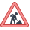
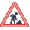

Icons
From Help wiki
Icons API page
Contents |
[edit]
Headings
| Button | Description |
|---|---|
| Check.png | |
 | Checklist.png |
[edit]
Under Construction
[edit]
Construction 1
 This page currently under construction
This page currently under construction


[edit]
Construction 2
| | This feature is currently under construction. |
[edit]
Alert Messages
[edit]
Message 1
| | Importing data can disrupt tables in your system, so we recommend that only expert users use this feature. |
[edit]
Message 2
| | 1. Importing data can disrupt tables in your system, so we recommend that only expert users use this feature. 2 Always test your upload files by uploading them to your Staging or Support first. 3.Contact your Account Manager for training on this feature. |
| | Import Glasses data is a legacy function that uses an FTP connection. Catch-e recommends that you use the job method qt / glass / importVehicleData instead. It uses an SFTP connection and is more secure. |
| | Import Glasses data is a legacy function that uses an FTP connection. Catch-e recommends that you use the job method qt / glass / importVehicleData instead. It uses an SFTP connection and is more secure. |
[edit]
Text Colour
Is this an all or nothing? Would all client have separate accounts or can it be a mix?
Grey background?
[edit]
Report Filters
| Filter | Type | Description | |
|---|---|---|---|
| Left Column | |||
| Delivery | Drop List | Choose from '--All--', '--Blank--', 'Email' or 'Post'. If 'Email' is chosen, the "Print Format" defaults to 'Email', in all other cases the, "Print Format" defaults to 'PDF'. | |
| As at | Date | Only contracts commencing on or prior to this date will be included and contracts suspended on or prior to this date will be excluded. | |
| As at | Date | Only contracts with a "Start Date" on or prior to this date will be included. | |
| Manager | List | Select a manager to limit the report selection to the selected Clients / Contact A/C Manager. An Account Manger can use this field run reports for all the clients they manage. | |
| Group | List | Select a group to limit the report selection to the selected "Client Group". | |
| Client | List Box | Leave as '--All--' or select the Client or Clients you want to report on. You can select multiple records by holding down the “Ctrl” key and use your mouse to select the items. To select a range of clients, hold down “Ctrl” and “Shift” keys and use either your mouse or arrow keys to select the range. | |
| Contract Type | List Box | Leave as '--All--' or select the Contract Type or Types you want to report on. You can select multiple records by holding down the “Ctrl” key and use your mouse to select the items you want. | |
| Report Queue | Checkbox | Uncheckecd by default. The report will be generated for you on this screen for downloading when complete. Select this checkbox if you want to send the report to the Report Queue screen to be downloaded later. | |
| Right Column | |||
| Cost Centre | List | The default selection is '--All--' (returns all records). You can also blank '--Blank--' (records have no cost centre), or you can select a specific cost centre. When a "Group" or "Client" is selected, only the cost centres that belong to them are shown. | |
[edit]
Top Buttons
| Button | Description | ||
|---|---|---|---|
| View mode | |||
| Click to create a new record. | |||
[edit]
Field Details
- This field name can be renamed.
- Access to this field can be role restricted and renamed.
- Access to this field can be role restricted.
[edit]
Screen Legend
| Field | Description |
|---|---|
| Pending | Transactions with red text are pending. These records are also shown in the Contracts / Maintenance tab as Pending. |
| Posted | Transactions with black text are posted. These records are also shown in the Contracts / Maintenance tab as Posted or Recharge. |
| Billing | Indicates the transaction will be recharged but the recharge invoice has not yet been raised |
| Deleted | Transactions with grey text are deleted. These records are not displayed in the Contracts / Maintenance tab. |
| History Only | This legend is shown for three situations.
|
| Warning | Warning |
| Failed | Failed |
[edit]
Action Buttons
| Button | Description | ||
|---|---|---|---|
| View | |||
| Select from 'PDF' or 'Text(CSV)' and then click to print the file. | |||
| Click to edit the selected record. | |||
| Check on.gif | |||
| Post.gif | |||
| History | |||
| Select an event and then click to delete the selected record. | |||
| Click to edit the selected record. | |||
| Click to create a new record. | |||
| Edit | |||
| When you have finished editing the record, click to save. | |||
| Cancel if you don't want to save your current edits. | |||
[edit]
Checkboxes
| Button | Description | ||
|---|---|---|---|
| View | |||
| Check-box on edit.gif | |||
| Check-box off edit.gif | |||
| Check-box on.gif | |||
| Check-box.gif | |||
[edit]
API References
[edit]
System Notes

{kind=link}
{kind=link}
{kind=link}